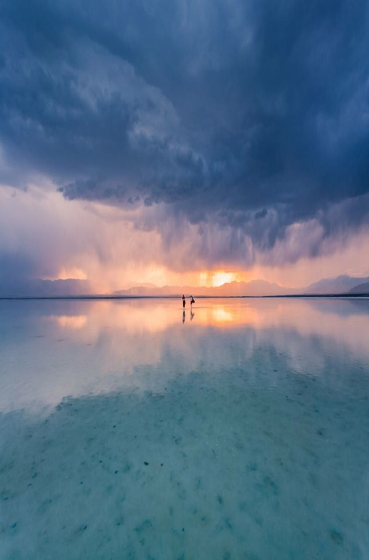
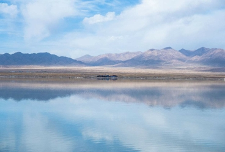

旅游攻略

一般夏季的时候是茶卡盐湖的旅游旺季，7、8月份去旅游的游客比较多，不过此时间段也是茶卡盐湖最美的时候，此时间段降雨量比较，而且阳光充足，拍出来的照片光线好不说而且很纯净，盐湖的结晶度也很高，倒影出来的影子也很清晰，茶卡盐湖景区一般两三个小时就能游览完，主要是坐坐小火车拍拍网红照片，然后欣赏下盐雕，不做小火车也可以沿着铁轨散步也是很惬意的。
地理位置：青海省海西州乌兰县茶卡镇 交通：去茶卡盐湖的方式有很多种，有拼车、包车、客车、火车、自驾等多种方式，游客朋友可以根据自己的需求选择，下面给大家简单罗列下。
【客运】西宁客运站每天有6班车发往茶卡镇，票价是65.5元/人，发车时间依次是：08:00、09:45、11:00、12:00、14:00、15:30。 【包车】包车的价格是不固定的，一般淡旺季的价格都各有不同，淡季期间一辆小轿车差不多500左右，旺季的话差不多700左右，具体价格可以跟司机商量。 【火车】一般火车这条交通只在旺季的时候开通，具体的开通时间可以去铁路局咨询客服，车次分别是Y961、Y962，硬座的票价是62.5元/人;硬卧：上铺110.5元/人、中铺114.5元/人、下铺117.5元/人。 【自驾】西宁市区-昆仑西路-通海路-西和高速-京藏高速-西倒一级公路-京藏高速-盐湖路-茶卡盐湖
开放时间：5月1日-10月31日(旺季) 05:30-22:00;11月1日-12月31日(淡季) 08:30-18:00。 门票：景区门票是70/人，如果有学生证的话享受半价优惠，景区里面观光小火车单程票价是50元/人，电瓶车单程10元每人。
游玩路线：从景区入口出发(可乘坐电瓶车)——东码头——乘坐游艇至湖心码头—(徒步或小火车)—天空之镜广场——盐工礼堂——老礼堂广场——最后景区出口结束
最佳拍摄时间：想要拍出空灵纯净的照片一定要在阳光充足的大晴天才行，早上十点左右和下午四点左右是最佳拍摄时间，光线很好，拍出的倒影也很清晰。关于茶卡盐湖几月份去最美这个问题还是因人而异吧，有人喜欢夏季去，有人就喜欢冬季去，只要天气晴好，那就能看到“天空之境”的美景，上面这份自由行攻略收好就行。

茶卡盐湖，位于青海省海西州蒙古族藏族自治州，是古丝绸之路和茶马古道的重要站点，总面积105平方公里，相当于16个杭州西湖一样大。 茶卡盐湖中盛产食用盐，全湖盐产量够全国人民吃七八十年。
茶卡盐湖是水位较浅的固液并存的盐湖（过膝的情况较少），总面积约105平方公里，地处世界屋脊——青藏高原的第一站青海，镶嵌在雪山草原之间而不是荒原戈壁上。虽然其年蒸发量是年降水量的十倍，但是周围雪山的不断融入、地下水的涌动以及近几年的气候反常，导致茶卡盐湖不干涸。季节性的水量的调节使得湖水有深有浅，不同时间不同天气来游玩的客人的感觉自然不一样。一般条件下，晴朗的上午和傍晚、深夜，茶卡盐湖会清晰的出现各种倒影，使得大家出现一种空间错乱的感觉，这就是所谓的“天空之境”的感觉。 茶卡盐湖主要成分是氯化钠，简单粗加工后就可以食用，是西北人民秋冬季腌菜的主要调料，加碘后成为精细盐，可以用作烹饪。 茶卡盐湖附近有乌兰牧场和雪山，使得当年跟随成吉思汗西征的蒙古部落驻留此地，久而久之和当地藏族汉族融合形成了今天的海西蒙古族藏族自治州。茶卡盐湖因盛产“大青盐”而久负盛名。据称现储盐量达4.48亿吨，氯化钠含量高达95%，据说可供全国人民使用约85年。 茶卡盐湖形成：盐湖的形成是地壳运动导致的，青藏高原在远古时期属于海洋，历经了数年地壳运动，形成了高原，仍留在其中的海水就是我们今日所熟知的盐湖，包括茶卡盐湖。
温馨小贴士： 进入茶卡盐湖，必须注意安全，请穿鞋套或者租赁雨靴(自备或者景区购买，今年景区内的鞋套不贵)。在拍照的时候注意脚下安全，不要滑倒，不然搞湿自己或者摔伤就不好了。 还有，用完的鞋套请带到垃圾箱哈，爱护天空之镜，有你的一份。